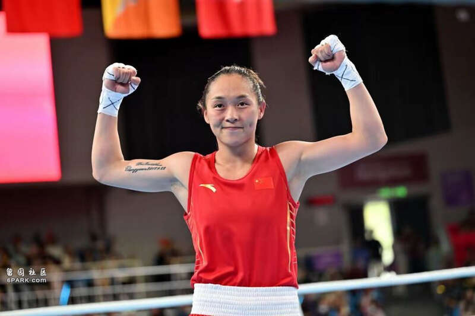
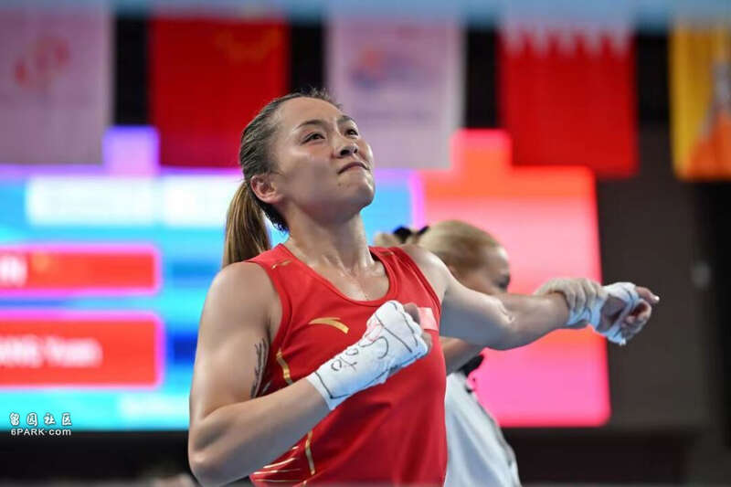
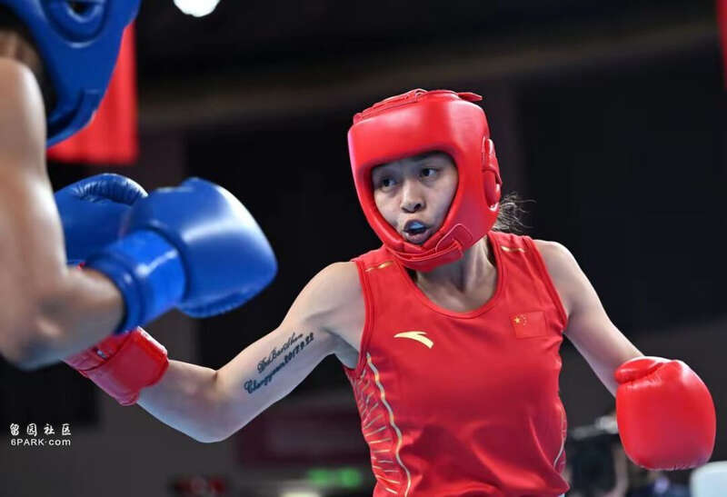
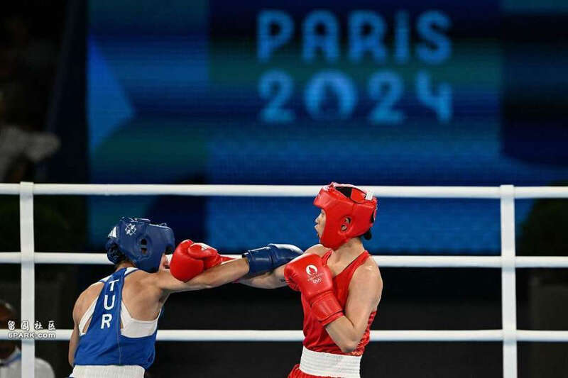

2024年8月9日，巴黎奥运会拳击赛场带来惊喜，中国名将常园5-0战胜土耳其选手阿克巴斯，勇夺女子54公斤级冠军，中国女子拳击实现零的突破，这是中国队本届奥运会第29金。

比赛焦点
中国女子拳击以前最好的成绩是奥运亚军，在这个周期多级别都具备较强竞争力，此前杨文璐已经获得女子60公斤级银牌，输给爱尔兰名将哈林顿，除此之外女子66公斤级杨柳、女子75公斤级李倩双双晋级决赛，杨柳对阵阿尔及利亚选手哈利夫，李倩对阵巴拿马选手贝隆。
常园以前是女子51公斤级的选手，后来为参加巴黎奥运会，改到54公斤级，作为中国女子轻量级拳击的佼佼者，上届奥运会常园止步八强，输给保加利亚选手佩特洛娃，如今常园再创佳绩，取得新的突破，此前更是打败老对手方哲美，去年亚运会常园输给方哲美获得银牌。

决赛对手是来自土耳其的哈蒂斯.阿克巴斯，这位00后年轻小将实力不俗，曾经获得欧锦赛冠军，不过从各方面来看，常园还是更胜一筹，首先阿克巴斯的大赛经验不足，其次以往成绩我们更好，最后常园士气正盛，竞技状态处在巅峰期，当然最终还是要看两人的临场发挥。
晋级之路
预赛常园5-0爱尔兰选手珍妮弗、阿克巴斯5-0澳大利亚选手蒂安娜，1/4决赛4-1保加利亚选手佩特洛娃、阿克巴斯5-0蒙古选手恩赫贾尔嘎，半决赛常园3-2朝鲜选手方哲美，阿克巴斯3-2韩国选手林爱吉，其中方哲美是亚运会该项目的冠军，佩特洛娃积分更高位列头号种子。

决赛阶段
五位裁判给两人打分，三个回合结束后分出胜负，第一回合双方都很保守，毕竟决赛心态难免紧张，没有选择主动进攻，采用稳扎稳打的策略，等待对方先露出破绽，常园抓住机会，摆拳多次击中对手，第一回合结束，常园4个10分、1个9分，阿克巴斯4个9分、1个10分。
第二回合常园更加主动，先是快速出拳击中对手面部，随后不断虚晃躲开攻击，常园组合拳连续命中，阿克巴斯被逼到角落，第二回合结束，五个裁判都给常园10分，阿克巴斯全是9分，第三回合常园守住优势，最终5-0战胜阿克巴斯，这是中国女子拳击第一枚奥运会金牌。
从跌倒的地方站起来！常园摘得女子拳击54公斤级金牌创造历史
北京时间8月9日凌晨，在巴黎奥运会拳击女子54公斤级决赛中，中国选手常园战胜土耳其选手夺得金牌，这也是中国女子拳击队在奥运会史上的首枚金牌。
在巴黎奥运赛场，常园首秀就展现出了出色的状态，以5比0横扫爱尔兰选手詹妮弗-勒汉晋级八强；随后的1/4决赛中，她面对一号种子斯坦尼米拉-彼得波娃丝毫不惧，4比1战胜对手晋级；半决赛中又以3比2力压老对手方哲美闯入决赛，距离实现梦想、创造中国女子拳击的历史（奥运夺金），只有一步之遥。
对常园来说，这是一次完美的晋级之路，更是一次重新找回自我的旅途。
回顾东京奥运会的1/4决赛，志在夺牌的常园面对保加利亚拳手斯托伊卡-佩特洛娃，没有能发挥出自己全部的潜能，最终以1比4遗憾止步，赛后面对镜头，常园眼含热泪竖起大拇指为自己加油的画面，让人印象深刻。
三年过去了，又是奥运赛场，又是1/4决赛，这次同样面对来自保加利亚的拳手，对方还顶着世界第一的头衔，常园打得坚决，在首回合落后情况下，干净利落的4比1逆转，常园迈过了最艰难的一关。
“现在很激动，很开心，毕竟突破了嘛。”走下赛场，常园一脸轻松，“因为对手比较强大，所以赛前我们也进行了非常充分的准备，我的任务就是带着轻松的心态去比赛。”
半决赛同样是一场复仇之战，在2023年的杭州亚运会的女子拳击54公斤级比赛中，常园和方哲美在决赛相遇，经过苦战，常园2比3不敌对手，在家门口遗憾错失冠军。眼下常园和老对手狭路相逢，还了对方一个3比2，也终于站上了奥运会的决赛舞台。
获胜一刻，常园挥舞拳头高声呐喊，仿佛将积压已久的情绪宣泄了出来。常园接受采访时谈道：“其实我赛前也感到紧张，一晚上没睡着，满脑子都想的是如何去和她打，因为这个对手（方哲美）让我在自己的国家丢掉了那枚金牌（亚运会），我一定想要在另一个地方拿回来，在更大的舞台（奥运会）。”

常园（右）在比赛中
值得一提的是，奥运女子拳击的竞争异常激烈，赛前久经沙场的常园只被列为8号种子，不过眼下的她比任何时候都更有信心，也做好了最充分的准备，为了在巴黎冲金，常园改变了打法，从比赛来看效果显著，后手拳命中率高达，作为反架选手的特点发挥得淋漓尽致。
除了技术上的锤炼，常园的心理也愈发成熟，她坦言：“过去我是一个情绪化的人，很小的事情、一个细节都会影响到我的状态，但现在我更懂得如何去享受比赛，在场上尽力去做最好的自己。”
从夺下2014年南京青奥会女子48-51公斤级冠军开始崭露头角，到2017年在全运会女子51公斤级上称霸，再到2018年雅加达亚运会51公斤级站上亚洲之巅……常园在赛场上早早收获了诸多荣誉，如果非要说还有什么缺失，那么就是一块在她心中分量最重的奥运金牌。
早在2016年里约奥运会，年仅20岁初出茅庐的常园就曾为前奥运银牌得主任灿灿充当陪练，当时常园心想，如果有一天自己能代表中国走上奥运赛场该是多棒的事情，2021年的东京得偿所愿的她却无奈止步八强，这一回常园不想留下遗憾。
最终，常园站上了巴黎奥运会之巅，摘得金牌的同时也为中国女子拳击队创造了历史。